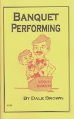

99 Cent Book Auctions
1/2/2010
{kind=link}

Again, I now have a selection of books listed on eBay auctions beginning at just 99 cents (with free shipping!). CLICK HERE to see the full list.
Among the books listed is Dale Brown's very popular Banquet Performing. The following is a brief excerpt from the opening chapter:
Why Banquets?
By Dale Brown
Many vents choose not to pursue banquet engagements because banquets appear to represent a relatively small and seasonal market. Nothing could be further from the truth. It's true that at certain times, at Christmas, for instance, it's easier to book banquets than at other times. But "easier" doesn't mean that opportunities don't exist during non-holiday periods as well....the vent just has to know how to uncover these opportunities.
First of all, you have to realize that banquets are not limited to formal, annual dinners. Weekly or monthly luncheon meetings, retirement parties, class reunions, and special award dinners can be classified as banquets. In fact, whenever a meal is served to an organized group, it could represent a potential opportunity for the vent who offers banquet programs.
That means the vent who is willing to put some effort into selling his or her services has a never-ending list of possible engagements right in their own back yard.
To ensure success on the banquet circuit, a vent should know:
* How to identify upcoming banquets.
* How to market himself.
* How banquet programs are different from other types of shows.
* What types of programs are best suited to banquets.
* How to work with banquet organizers.
* How to avoid typical pitfalls often encountered in banquet settings.
The chapters of Banquet Performing will discuss each of these subjects in detail.
* * * * *
Reprinted by permission from Banquet Performing, published and copyrighted 1985 by Maher Studios.